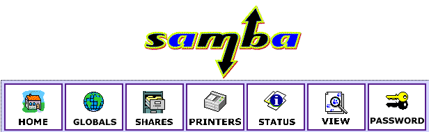
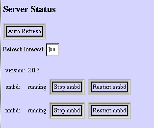
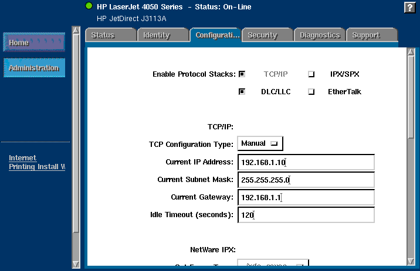

![[ Table of Contents ]](../gx/indexnew.gif)
![[ Front Page ]](../gx/homenew.gif)
![[ Linux Gazette FAQ ]](./../gx/dennis/faq.gif)
I am running a computer routing lab that is used to teach routing fundamentals on proprietary equipment. It consists of an 18 seat lab with 9 PCs, 1 server and 1 HP LaserJet 4050N with a HP Jetdirect print server card installed. The server is running Slackware 4.0 with Linux 2.2.6 on it. Eight of the PCs are running WinNT 4.0 SP5 and one PC is running Win95a.
My requirements for the Linux server are as follows:
This article will describe how I used SAMBA to:
NOTE: This is not a "howto" type of article but an example of a working configuration and the process used to configure SAMBA
Change to the Slackware CD, cd to /slakware/N11. Type pkgtool and "Install packages from current directory". For all other distributions, this article will assume that you have SAMBA properly installed on your system.
SAMBA is started under Slackware by the rc script "/etc/rc.d/rc.samba":
# # rc.samba: Start the samba server # if [ -x /usr/sbin/smbd -a -x /usr/sbin/nmbd ]; then echo "Starting Samba..." /usr/sbin/smbd -D /usr/sbin/nmbd -D fi
The smbd program provides SMB/CIFS services to clients. SMB (Server Message Block) is the services that Win95 and NT clients use to connect over networks. The new name for SMB is the Common Internet File System (CIFS).
The nmbd program is a NETBIOS name server to allow NETBIOS over IP naming services to clients.
Typing "ps -aux" at the command prompt allows us to view the processes that are running and to see if smbd and nmbd are actually present:
USER PID %CPU %MEM VSZ RSS TTY STAT START TIME COMMAND root 1 0.0 0.2 220 128 ? S Oct21 0:02 init root 2 0.0 0.0 0 0 ? SW Oct21 0:00 [kflushd] root 3 0.0 0.0 0 0 ? SW Oct21 0:00 [kpiod] root 4 0.0 0.0 0 0 ? SW Oct21 0:00 [kswapd]root 101 0.0 0.5 1544 380 ? S Oct21 0:00 /usr/sbin/smbd -D root 103 0.0 0.9 1196 584 ? S Oct21 0:03 /usr/sbin/nmbd -D root 8113 0.4 0.9 1164 616 ttyp0 S 11:14 0:00 -bash root 8120 0.0 1.1 2272 744 ttyp0 R 11:14 0:00 ps -aux
The /etc/smb.conf can be divided into 3 general sections:
# Global parameters workgroup = E328 # workgroup name netbios name = E328-00 # Linux server's netbios name server string = %h - Linux Samba server # comment shown in Win's Network Neighborhood detail view interfaces = 192.168.1.3/24 # NICs + subnet mask (24 = 255.255.255.0) encrypt passwords = Yes # Required for NT (Win95 will work with encrypted or not) null passwords = No # Must have a password log file = /var/log/samba. # location of samba log files (many!) max log size = 50 # maximum size of each log file socket options = TCP_NODELAY # Speeds up convergence of netbios os level = 33 # Gives a higher browse master "priority" preferred master = Yes # This server is the browsemaster guest account = pcguest # guest account name hosts allow = 192.168.1. 127. # networks allowed to access this server using SMBThe Shares section deals with sharing file directories. For example:
[homes] comment = Home Directories # comment shown in Win's Network Neighborhood detail view path = %H # automatically display user's home directory as SMB share valid users = %S # Only user is allowed to access this directory read only = No # can read/write create mask = 0750 # permissions given when creating new files browseable = No # only show user's home directory not "homes" folder [public] comment = Public Files # comment shown in Win's Network Neighborhood detail view path = /home/ftp/pub # path to public directory guest ok = Yes # anyone can access this directory [cdrom] comment = Cdrom on E328-00 # comment shown in Win's Network Neighborhood detail view path = /cdrom # path to cdrom drive guest ok = Yes # anyone can access cdrom drive, public share
The Printers section deals with sharing printers. For example:
[lp] comment = E328-Laser # comment shown in Win's Network Neighborhood detail view path = /var/spool/samba # path to spool directory print ok = Yes # allowed to open, write to and submit to spool directory
You can manually create the /etc/smb.conf file if you know what each of the entries mean or you can use the web GUI called SWAT (SAMBA Web Administration Tool). An added bonus of using SWAT was the online help files that described each of the choices available. I understand that SWAT is installed automatically with all versions of SAMBA from 2.0 and up.
Running via inetd ----------------- You then need to edit your /etc/inetd.conf and /etc/services to enable SWAT to be launched via inetd. In /etc/services you need to add a line like this: swat 901/tcp the choice of port number isn't really important except that it should be less than 1024 and not currently used (using a number above 1024 presents an obscure security hole depending on the implementation details of your inetd daemon). In /etc/inetd.conf you should add a line like this: swat stream tcp nowait.400 root /usr/local/samba/bin/swat swat One you have edited /etc/services and /etc/inetd.conf you need to send a HUP signal to inetd. On many systems "killall -1 inetd" will do this on others you will need to use "kill -1 PID" where PID is the process ID of the inetd daemon. Launching --------- To launch SWAT just run your favourite web browser and point it at http://localhost:901 Note that you can attach to SWAT from any IP connected machine but connecting from a remote machine leaves your connection open to password sniffing as passwords will be sent in the clear over the wire. You should be prompted for a username/password when you connect. You will need to provide the username "root" and the correct root password.
Once SWAT is up and running, you should see the following:

The menu buttons are pretty self-explanatory and there are excellent help screens available. A quick break down of the menus:
Whenever changes are made to the configuration in the Global, Shares and Printer section, the changes must be committed using the commit button/icon on the respective page. Otherwise the /etc/smb.conf file is not modified.
Once the changes are committed (/etc/smb.conf modified), the smbd and nmbd server should be restarted. The Status menu has options that allow the servers to be stopped and restarted.

I found that a good way of understanding the process that was going on was to view the /etc/smb.conf file as I made changes using the View button in SWAT.
It is very important that the usernames and passwords are the same for both the Windows and Linux environments. The synchronization of the Linux passwords with the SMB encrypted passwords is done using the shell script mksmbpasswd.sh which is found in the /usr/lib/samba/private.
Note: For Slackware, the directory for SAMBA is /usr/lib not the standard /usr/local directory.
The following information is taken from the /usr/doc/samba-2.0.3/docs/textdocs/ENCRYPTION.txt file:
The smbpasswd file. ------------------- In order for Samba to participate in the above protocol it must be able to look up the 16 byte hashed values given a user name. Unfortunately, as the UNIX password value is also a one way hash function (ie. it is impossible to retrieve the cleartext of the users password given the UNIX hash of it) then a separate password file containing this 16 byte value must be kept. To minimise problems with these two password files, getting out of sync, the UNIX /etc/passwd and the smbpasswd file, a utility, mksmbpasswd.sh, is provided to generate a smbpasswd file from a UNIX /etc/passwd file. To generate the smbpasswd file from your /etc/passwd file use the following command :- cat /etc/passwd | mksmbpasswd.sh >/usr/local/samba/private/smbpasswd
The problem that I found with this step was that I expected that it would automatically recognize shadowed passwords and place them in the smbpasswd file. Unfortunately, it didn't and I had to manually enter in the passwords using the smbpasswd command. Luckly, I had only only about 10 passwords to enter in. There is probably a method of doing this automatically and I am just not aware of it.
Once completed, I was able to use Network Neighborhood and point and click on the Linux directory shares without being prompted for a username and password.
Getting Linux and the HP JetDirect card to work was surprisingly easy. The JetDirect card is a print server card that fits into the HP 4050N printer. The first step is to configure the HP JetDirect card and printer. The standard install disk does not contain support for Linux but there is a WebAdmin tool that you can download from HP's website: http://www.hp.com/support/net_printing. I chose to do it manually by using telnet and the built-in webserver of the JetDirect card.
Telneting to the JetDirect Card
In order to telnet to the JetDirect card, you need to configure the printer's IP address. The default IP address is 192.0.0.192 which most likely will not be a valid address on your network. The HP 4050N printer allows you to to configure the IP address through the printer's status window. Select "JetDirect Menu" from the Menu button and then follow the directions for configuring the network. After the IP address is set, configure the subnet mask in a similar manner.
Telnet to your printer's IP address. You have two choices when telnetting in, you can view the current settings of the printer by typing "/" or viewing the help menu using "?" as shown by the following:
Please type "?" for HELP, or "/" for current settings
>/
===JetDirect Telnet Configuration===
Firmware Rev. : G.07.20
MAC Address : 00:10:83:1b:41:c7
Config By : USER SPECIFIED
IP Address : 192.168.1.10
Subnet Mask : 255.255.255.0
Default Gateway : 192.168.1.1
Syslog Server : Not Specified
Idle Timeout : 120 Seconds
Set Cmnty Name : notachance
Host Name : E328-LASER
DHCP Config : Disabled
Passwd : Enabled
IPX/SPX : Disabled
DLC/LLC : Enabled
Ethertalk : Disabled
Banner page : Disabled
>?
To Change/Configure Parameters Enter:
Parameter-name: value
Parameter-name Type of value
ip: IP-address in dotted notation
subnet-mask: address in dotted notation
default-gw: address in dotted notation
syslog-svr: address in dotted notation
idle-timeout: seconds in integers
set-cmnty-name: alpha-numeric string (32 chars max)
host-name: alpha-numeric string (upper case only, 32 chars max)
dhcp-config: 0 to disable, 1 to enable
ipx/spx: 0 to disable, 1 to enable
dlc/llc: 0 to disable, 1 to enable
ethertalk: 0 to disable, 1 to enable
banner: 0 to disable, 1 to enable
Type passwd to change the password.
Type "?" for HELP, "/" for current settings or "quit" to save-and-exit.
Or type "exit" to exit without saving configuration parameter entries
The first thing that you should do is type "passwd" and add an administrator password to the printer. Next configure the default gateway and then the host name. The rest will be configured using the printer's built-in webserver.
HP JetDirect Webtool

The HP JetDirect webtool has 6 menu tabs available:
Displays current status of printer including network stats
Displays current software/hardware revisions, host name, IP address, etc..
Allows configuration of TCP/IP (default protocol), IPX/SPX, DLC/LLC, Ethertalk and SNMP.
Allows changing of the administrator password and SNMP community name.
Displays statistics and information on TCP/IP, IPX/SPX, DLC/LLC, Ethertalk, printer and Jetdirect.
Takes you to the HP support website.
In order to print from Linux to the JetDirect print server, an entry was made in the /etc/printcap file. I made a new spool directory called /usr/spool/lj4050n but the default /usr/spool/lpd should really be used. The directory /usr/spool is a softlink to /var/spool.
The following is a listing of the /etc/printcap file that was used to communicate with the HP JetDirect print server:
# HP Laserjet 4050n
lp|lj4050n:\
:lp=/dev/null:sh:\
:mx#0:\
:sd=/usr/spool/lj4050n:\
:rm=e328-laser.domainname.com:rp=text:
Where:
indicates the default default printer "lp" with an alias/description of "lj4050n". If there was a space in the alias, it would automatically be detected as a description.
indicates that the printer is not connected to a physical port
indicates that there is no maximum file size to send to the printer
indicates the path to the spool directory
indicates the domain name of the printer to send print jobs to and what format to send it in. The choices were text or raw for HP printers. I found that the printer was intelligent enough that it automatically detected whether it was a text file, postscript file or PCL file.
>From Network Neighborhood, double-click on the Linux server's shared printer icon. Windows will ask you to configure the printer. I shared the printer's configuration CD on the Linux box and went to the disk1 folder to find the INF file. The printer configuration/installation will stop and display a message something to the tune that it "can't find disk2" just go up a directory to find the disk2 folder. It will finish the installation and you are done. I usually run a Print Testpage to ensure that it works properly.
The normal installation procedure is to run the setup utility from the CD. This installs megabytes of data on to the client which was not what I wanted. I only wanted the print driver and found that the above method gave me a quick, clean and simple printer configuration.
In configuring the lab environment, I ran into a few problems, some annoying and some took a bit of work to sort but all were solved.
An example of one of the annoying problems was having the [homes] folder show up as a share on a client. It was identical to the client's home directory. Selecting "Browseable = No" in the Global section of /etc/smb.conf solved that.
The most frustrating problem was finding out the the smbpasswd file did not automatically convert passwords from shadow files. I kept getting asked for a username and password whenever I tried to connect to a network share. All the documentation indicated that I was doing everything correct. Manually entering each username's password using the smbpasswd program solved this. I am sure that there is an automatic process for this, as this would not be acceptable if there more than my 10 generic user accounts.
All in all, I was able to configure the network quicker and easier than if I used an NT server and the Linux server is totally transparent to the user. Here's an interesting point: this article has taken longer to write than it did to configure the network.